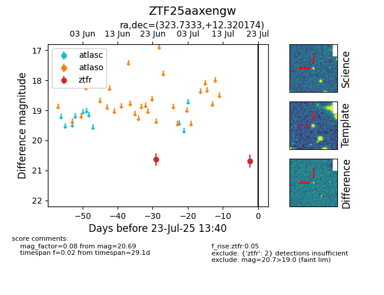

Target ZTF25aaxengw at 2025-07-23 13:40, see:
FINK: fink-portal.org/ZTF25aaxengw
Lasair: lasair-ztf.lsst.ac.uk/objects/ZTF25aaxengw
ALeRCE: alerce.online/object/ZTF25aaxengw
alt names
ZTF25aaxengw (ztf,fink)
coordinates:
equatorial (ra, dec) = (323.7333,+12.32017)
galactic (l, b) = (66.0235,-28.14447)
photometry
last ztfr=20.69
2 ztfr detections
